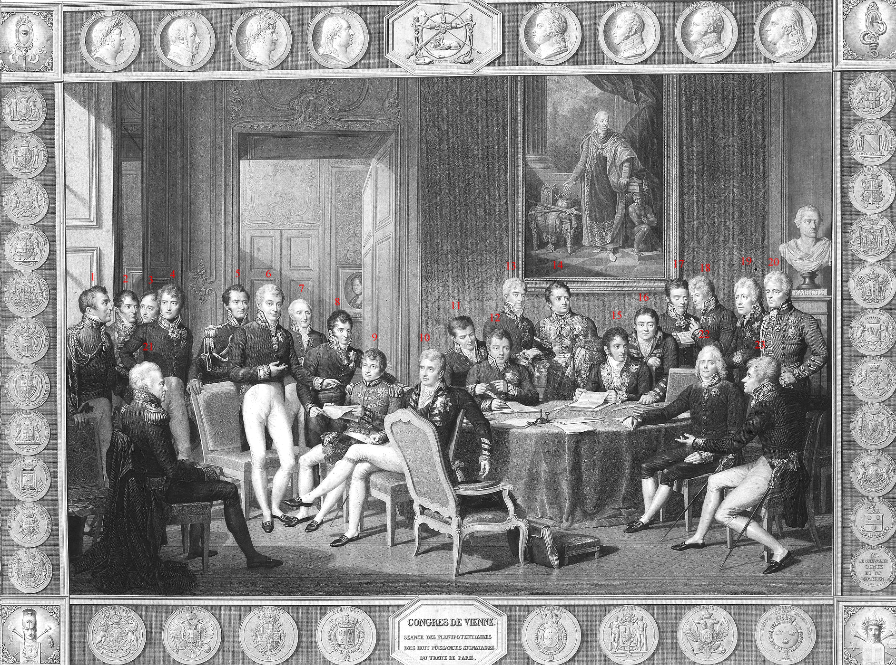
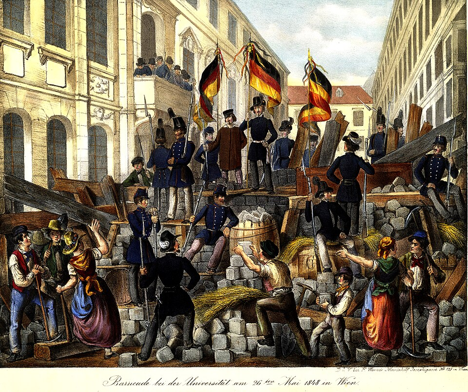
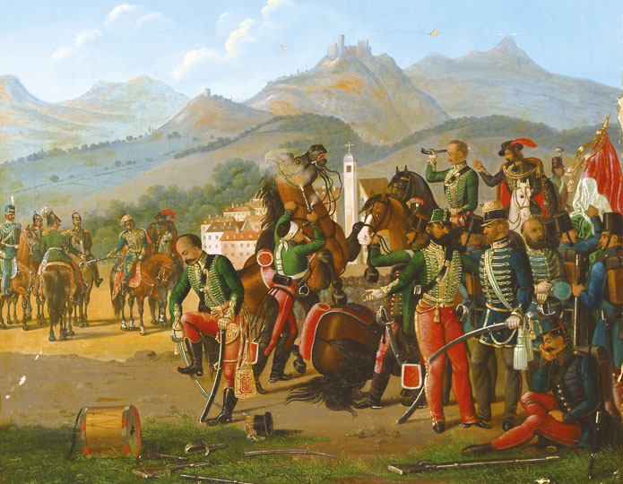
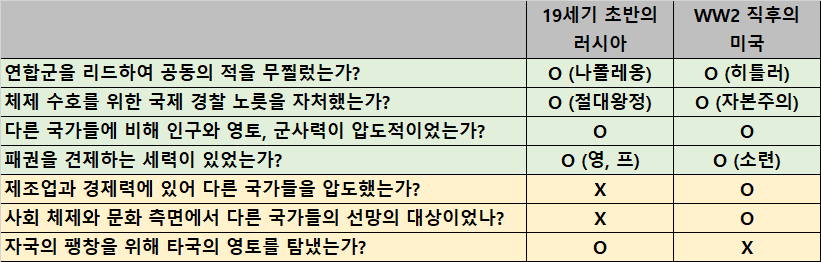
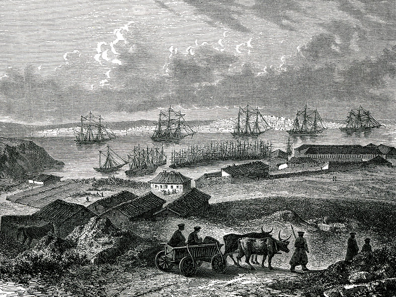

보스포러스 해협 이야기 (1) - 유럽의 경찰, 러시아
게시: 2026-02-05T06:30:17+09:00
나폴레옹의 몰락 때까지 유럽에는 전쟁이 끊이지 않고 계속 벌어졌습니다. 이렇게 말하고 보면 마치 나폴레옹이 유럽에서 벌어진 전쟁들의 원흉 같지만, 실은 나폴레옹의 등장 이전에도 유럽에서는 7년 전쟁이다 30년 전쟁이다 무슨 왕위계승 전쟁이다 해서 항상 사람이 죽고 건물이 불탔습니다. 그런데 나폴레옹이 쫓겨나자마자, 신기할 정도로 전쟁이 딱 멈추게 되었습니다. 그 가장 큰 원인은 오스트리아의 메테르니히가 주도한 빈(Wien) 체제였습니다. 프랑스 대혁명과 나폴레옹이라는 열병을 겪고난 유럽의 왕가들과 귀족들은 이제 두 번 다시 이런 일이 벌어지기를 원치 않았기 때문에 뜻을 모아 유럽의 구질서를 지키자는 체제 유지 연맹체를 만든 것이었습니다.

(빈 회의에 참석한 사람들 모습입니다. 1번이 영국의 웰링턴, 6번이 오스트리아의 메테르니히, 8번이 러시아의 네셀로더, 10번이 영국의 캐슬레이(로버트 스튜어트), 14번이 영국의 찰스 스튜어트, 19번이 프로이센의 폰 훔볼트(유명한 학자 훔볼트의 형), 21번이 프로이센의 하르덴베르크,, 22번이 프랑스의 탈레랑입니다.)
그런데 한 번 혁명과 자유의 맛을 본 유럽의 민중들은 나폴레옹이 어찌 되었든 상관하지 않고 구체제를 뒤엎으려 틈만 나면 봉기했습니다. 주로 선진국에서는 시민계급에서 자신들의 권리를 찾으려는 움직임으로 나타났지만, 외세의 지배를 받는 나라들에서는 민족주의 형태로 나타났습니다. 대표적인 것이 폴란드의 독립 운동도 그랬고, 이탈리아 독립 운동도 그랬으며, 헝가리의 민족주의 운동도 그랬습니다. 그것이 바로 제국(帝國이 아닌 모든 나라라는 뜻의 諸國)의 봄(Spring of the Nations)이라고 불리던 1848년 유럽 혁명의 물결이었습니다.

(1848년 혁명 중 가장 유명한 것은 프랑스를 다시 공화국으로 만든 2월 혁명입니다만, 성공하지 못했을 뿐 거의 대부분의 유럽 국가의 수도에서는 시민계급의 봉기가 일어났습니다. 이 그림은 1848년 5월의 오스트리아 빈에 세워진 혁명가들의 바리케이드입니다. 훗날 통일 독일의 국기가 되는 저 삼색기의 모습이 인상적입니다.)
그러나 결과적으로 프랑스의 2월 혁명을 제외하고는 대부분의 혁명은 실패로 끝났습니다. 그 원인에는 여러 가지가 있겠으나, 가장 큰 이유는 역시나 빈 체제였습니다. 빈 체제는 단순한 조약이나 법령이 아니었습니다. 빈 체제를 무력으로 지탱해주는 힘은 바로 유럽의 헌병을 자처한 러시아였습니다. 러시아는 폴란드 독립 운동을 무자비하게 진압했고, 오스트리아를 그로기 상태로 몰아간 헝가리의 민족주의 혁명에도 20만 대군을 투입하여 진압했습니다. 왜 러시아는 남의 나라 좋은 일, 아니, 남의 왕가 좋은 일에 자국군을 동원하여 돈을 쓰고 피를 흘려준 것일까요?

(헝가리의 혁명은 그 다음 해인 1849년 빌라고스(Világos)에서 헝가리 혁명군이 러시아군에게 항복하면서 진압되었습니다. 낙심한 헝가리 혁명군이 기병용 군도를 발로 부러뜨리고 있습니다.)
(이 그림은 1848년 '밀라노의 5일 항쟁'을 그린 것입니다. 약 1700명의 밀라노 시민들이 시내에 바리케이드를 치고 오스트리아군과 싸웠는데, 그 중 총을 가진 사람은 약 600명 밖에 없었습니다. 그 중 400여 명이 전사하고 700여 명이 부상을 입으며 결국 오스트리아군에게 진압되었습니다. 밀라노 하면 우리는 그냥 패션으로 유명한 부자 동네 생각하지만 거기도 우리 광주 못지 않은 투쟁과 희생이 있었습니다.)
일단 당시 유럽 국가들은 국민이나 민족을 위한 나라가 아니었고 왕가와 그를 지지하는 귀족들을 위한 나라였습니다. 게다가 유럽의 왕가들은 모두 친척 관계였으므로 남의 왕가라고 할 수만은 없었습니다. 그리고 러시아는 유럽의 혁명에 대해 모른 척할 경우 결국 그 물결은 국경을 넘어 러시아까지 몰려온다는 것을 1812년에 뼈저리게 느낀 바 있었습니다. 따라서 유럽에 혁명이 발발했다고 하면 강 건너 불구경하지 않고 군장 싸들고 혁명이라는 불을 끄기 위해 농노들로 구성된 군대를 보내 무자비하게 탄압했던 것입니다. 러시아가 그렇게 유럽의 혁명 세력을 두려워 했던 이유 중에는 러시아 자신의 체제가 혁명에 가장 취약할 수밖에 없는 농노제 기반이었다는 점이 가장 컸습니다. 물론 거기엔 '유럽의 왕정들이 금수가 아닌 이상, 이렇게 도와주면 나중에 은혜를 갚겠지'라는 나름대로의 계산도 있었습니다. 물론 이건 촌구석 러시아 로마노프 왕조의 순진한 착각에 불과했습니다. 순진한 착각에서이건 유럽 혁명에 대한 공포에서이건, 러시아가 그렇게 유럽의 헌병 역할을 하면서 실제로 19세기 초반 유럽에서는 러시아의 패권을 어느 정도 인정하는 분위기일 수 밖에 없었습니다. 실은 러시아의 잠재력을 가장 먼저 알아본 사람은 나폴레옹이었습니다. 그는 러시아를 정복의 대상이 아닌 유럽 분할 공동 통치의 파트너로 보았고, 1812년 원정도 그 파트너쉽을 재개하기 위한 것이었습니다. 실제로 나폴레옹을 1812년 러시아 원정과 1813년 라이프치히 전투에서 몰락시킨 주역도 러시아였습니다. 1813년 결성된 제6차 대불동맹전쟁 내내, 프로이센 같은 이류 국가는 말할 것도 없고 오스트리아나 영국도 모두 러시아의 짜르 알렉산드르의 비위를 맞추기 위해 안절부절했습니다. 마침내 나폴레옹을 무너뜨린 뒤, 유럽 각국, 특히 영국에서는 즉각 '이제 유럽의 패권은 프랑스에서 러시아로 넘어갔으니, 이젠 러시아의 팽창을 견제해야 한다'는 의견이 조용히 번졌습니다. 이렇게 보면 19세기 초반 유럽에서 러시아의 위상은 WW2 직후의 미국과 비슷했습니다. 물론 다른 점들도 많았습니다.

(당시 러시아와 미국은 닮은 점도 꽤 있지만 다른 점은 명백해 보입니다. 다만 세월이 흐르면서 달랐던 부분들이 닮은 점으로 변해간다면... 어이구야) 특히나 러시아는 WW2 직후의 미국과는 달리 팽창을 위해 타국의 영토를 탐냈습니다. 러시아는 동쪽으로도 팔을 뻗었지만, 러시아가 가장 노리는 것은 바로 오스만 투르크였습니다. 그 이유는 당시 오스만 투르크의 지배하에 있던 발칸 반도의 슬라브 민족들을 장악하여 영토와 인구를 증가시키려는 것도 있었지만, 바다 때문이기도 했습니다. 러시아도 진정한 패권을 위해서는 육군만으로는 부족하고 바다로 진출하여 해군력 증강과 동시에 해외 무역의 이권을 장악해야 한다는 것을 표트르 대제 때부터 잘 알고 있었고, 그를 위해 언제나 부동항을 애타게 구하고 있었습니다. 러시아는 오랜기간 부지런히 오스만 투르크를 두들겨 패서 뺴앗은 크림 반도에 1783년부터 세바스토폴(Sevastopol)을 건설하여 마침내 부동항을 얻었습니다. 그리고 거기에 웅장한 흑해 함대를 건조했습니다. 1850년 즈음해서는, 전통의 발트 함대에는 전열함 26척, 그리고 새로운 주력 함대로 키우던 흑해 함대에는 전열함 14척이 있었고, 이는 영국의 전열함 70~80척, 프랑스의 전열함 45~50척에 이어 당시 유럽 3위의 해군력이었습니다. 이제 러시아의 바다를 향한 갈증은 드디어 해소된 것일까요? 아니었습니다.

(19세기 초반 세바스토폴의 모습입니다. 세바스토폴의 이름은 예카테리나 대제 시절, 일부러 현지 이름 대신 러시아가 비잔틴 제국의 정통성을 승계한다는 것을 강조하기 위해 그리스어 σεβαστός (sebastós, '위대한, 존경할 만한')에 πόλις (pólis, '도시')를 합성해 만든 신조어로 만들었습니다. 이름만 봐도 결국 이스탄불, 그러니까 비잔티움을 노린다는 것을 알 수 있습니다.)
일단 러시아 발트 함대에는 큰 제약 사항이 있었습니다. 그 모항은 페체르부르크 앞바다의 섬에 위치한 크론슈타트(Kronstadt)였는데, 여기는 한겨울이면 얼어붙어 쓸 수가 없었고, 게다가 덴마크의 외레순(Øresund) 해협이 막히면 발트해에 꼼짝 없이 갇히는 신세였습니다. 새로 마련한 흑해 함대의 모항 세바스토폴은 부동항이었지만 역시나 보스포러스 해협 때문에 러시아 함대는 흑해 안에 꼼짝 없이 갇혀야 했습니다. 그나마 외레순 해협은 천년 넘게 많은 나라들의 상선은 물론 군함들도 자유롭게 드나드는 전통이 있었으므로, 덴마크나 스웨덴과 전쟁 상태가 아닌 다음에야 러시아 군함들도 통과가 가능했습니다만, 보스포러스 해협은 이야기가 달랐습니다. 1453년 콘스탄티노플 함락 이후, 지난 400년 가까이 보스포러스 해협은 오스만 투르크가 굳게 봉쇄하고 있어서 18세기 말엽부터 러시아 상선들만 겨우 오스만 투르크의 허락 하에 드나들기 시작했고, 러시아 군함들은 통과가 안 되는 곳이었습니다. 즉, 러시아 흑해 함대의 최신예 전열함 14척은 지중해나 발트해, 북해와 대서양 등에서 볼 때는 없는 존재나 마찬가지였습니다. 결국 보스포러스 해협은 러시아에게 있어 반드시 뚫어야 하는 '산해관' 같은 관문이었고, 반대로 러시아의 팽창을 두려워 하는 영국과 프랑스로서는 반드시 막아야 하는 최후의 마지노선이었습니다. 게다가 오스만 투르크의 국력은 자꾸만 약해지고 있었습니다. 뚫으려는 세력과 막으려는 세력간의 충돌은 시간 문제일 뿐, 결국 터질 수밖에 없었습니다. 그런데 실제로 전쟁이 터지는 계기는 어처구니 없는 사소한 것이었습니다.